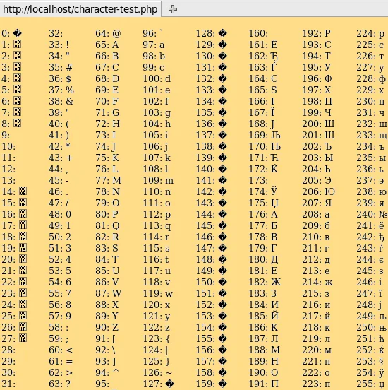

A kettes számrendszer
Mint, ahogy azt már tanulhattátok a számítógép működése a kettes számrendszeren alapul. Két számjegyből áll: a 0 és az 1. A számitógép ebből a két számmból építi fel az adatokat adategységekre bontva.
Nekünk most csak két adategységre lesz szükségünk a feladat értelmezéséhez:
Bit: (ez a legkisebb adategység. Két értéke van, a 0 és az 1)
Bájt: (8 bit az egy bájt vagyis 8 db 0 vagy 1)
Bináris számrendszerből Decimális
A Bináris (kettes) számrendszer az ember számára elég bonyolult, ezért ezeket a bináris számokat (kettes számrendszer beli számokat) átalakítjuk decimálissá, vagyis az ember által használt tízes számrendszerré, de ezt mégis, hogyan lehet?
Nézzük meg a következő ábrát:
| 128 | 64 | 32 | 16 | 8 | 4 | 2 | 1 |
| 0 | 0 | 1 | 0 | 0 | 1 | 1 | 1 |
Az első sorban láthatjuk a 2-nek a hatványait (20 = 1, 21 = 2, 22 = 4, 23 = 8 stb...)
A második sorban meg magát a bináris kódunkat láthatjuk, ami 8 bit, vagyis 1 bájt
A "0" és az "1" igaz/hamis értéket jelölnek, megmondják, hogy a fölöttük lévő szám (például a 32) összeadandója-e az összegnek vagy sem.
Lényeg: összeadjuk, azokat a számokat, melyek alatt "1"-es van.
00100111 = 0+0+32+0+0+4+2+1 = 39
Számokból betűk
Miután a számítógép átalakította a bináris kódot decimálissá, megnézi az aktuális kódlapot
A kódlap megmondja, hogy egy adott számhoz milyen karaktert rendeljen hozzá.Több fajta is van, de ezek közül a leggyakoribb az UTF-8 kódlap, mivel ékezetes betűket is tartalmaz.
példaként itt van egy ábra az UTF-8 kódolásról:

A következő oldalon egy gyakorló feladatot kell megcsinálnotok: